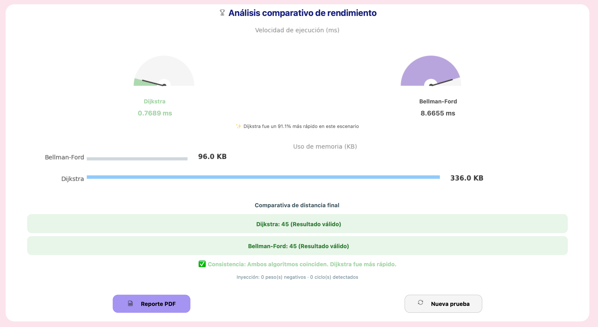

Ingeniería en Sistemas Computacionales
Grupo: 6° "C".
Asignatura: Lenguajes y Autómatas II.
Tema 3: Optimización.
Proyecto: Desarrollo de un software de benchmarking.
Equipo de desarrollo:
Docente: M.M.D. José Leonel Pech May.
Fecha de entrega: 6 de mayo de 2026
Repositorio oficial: https://github.com/20pedro01/Sistema-de-benchmarking-de-grafos
El presente manual describe el funcionamiento y la arquitectura de la plataforma de benchmarking de grafos. En el ámbito de la optimización y la ingeniería de software, el análisis empírico de algoritmos es fundamental para determinar cuál solución se adapta mejor a restricciones de tiempo y memoria en condiciones reales. Este software permite comparar dos enfoques clásicos para la búsqueda de rutas mínimas: Dijkstra y Bellman-Ford, evaluando no solo su velocidad, sino su robustez ante grafos complejos, pesos negativos y ciclos de ganancia infinita.
Ésta técnica voraz consiste en tomar la mejor decisión "local" en cada paso (el camino que parece más corto en ese preciso momento) con la esperanza de que estas decisiones lleven a la solución óptima global.
Utiliza un enfoque de programación dinámica. Esta técnica consiste en resolver un problema complejo dividiéndolo en subproblemas más simples.
Para asegurar la precisión académica del benchmark, se seleccionaron herramientas que permiten mediciones a bajo nivel:
Tiempo (time.perf_counter): se utiliza esta función por su alta resolución (nanosegundos), ideal para medir latencias críticas en algoritmos de optimización.
Memoria (resource.ru_maxrss): en lugar de tracemalloc, que rastrea cada objeto de Python, se utilizó RSS para medir la memoria física real (Resident Set Size) consumida por el proceso en el sistema operativo, ofreciendo una métrica de impacto real en el hardware.
Algoritmos (Motor Híbrido): se implementó un sistema dual que utiliza SciPy (C++) para máxima velocidad en grafos estándar y un motor SPFA optimizado para garantizar que el benchmark sea escalable hasta 10 millones de nodos sin perder la capacidad de detección académica de anomalías.
Para poner en marcha el sistema, siga estos pasos:
git clone https://github.com/20pedro01/Sistema-de-benchmarking-de-grafos
cd Sistema-de-benchmarking-de-grafos
Asegúrese de tener Python 3.10+ instalado en su sistema y ejecute el siguiente comando en su terminal:
python3 -m pip install customtkinter networkx matplotlib scipy reportlab pillow
Una vez instaladas las dependencias, inicie la aplicación con:
python3 ui.py
Imagen 1: consola de ejecución exitosa.
Pie de imagen: ventana de comandos mostrando el inicio correcto del sistema y la carga de módulos.
Al iniciar la aplicación, se presenta una tarjeta de bienvenida que resume las capacidades del sistema (visualización, modo stress, conectividad e inyectores). Desde aquí, el usuario puede acceder directamente a este manual.
Imagen 2: tarjeta de bienvenida y dashboard.
Pie de imagen: interfaz principal con el botón de descarga del manual de uso.
Para una auditoría visual, ingrese un número de nodos entre 10 y 20 y una densidad baja (menor a 30%). Al presionar "Generar", el sistema dibujará el grafo y mostrará su tabla de adyacencia.
Paso de confirmación: tras la generación, es obligatorio presionar el botón "Confirmar grafo". Este paso bloquea la configuración inicial y habilita las herramientas de inyección y el botón de ejecución del benchmark.
Imagen 3: panel de configuración y validaciones.
Pie de imagen: entrada de parámetros con avisos de sugerencia para garantizar conectividad.
Imagen 4: visualización de grafo y tabla de adyacencia.
Pie de imagen: renderizado interactivo de un grafo pequeño con sus respectivos pesos.
Este caso permite observar cómo los algoritmos reaccionan ante aristas que reducen el costo total del camino. El sistema calcula automáticamente un límite de inyección para no saturar la red.
Consideraciones de fallo y rendimiento:
- Rendimiento: en grafos con muy pocos nodos (ej. 10 nodos), la diferencia de tiempo entre Dijkstra y Bellman-Ford puede ser mínima o incluso Dijkstra puede resultar más lento debido al sobrecosto inicial de gestionar la cola de prioridad frente a una simple relajación de aristas. Sin embargo, conforme aumenta el tamaño del grafo, la superioridad de Dijkstra se vuelve notoria y exponencial.
- Fallo condicional: el hecho de inyectar pesos negativos o ciclos no garantiza un fallo inmediato en el resultado de Dijkstra. El fallo (inexactitud) solo ocurrirá si la ruta más corta calculada por el algoritmo pasa obligatoriamente por el área inyectada. Esto depende del tamaño del grafo, la cantidad de pesos inyectados y la topología resultante.
Imagen 5: panel de inyectores dinámicos.
Pie de imagen: controles de inyección bloqueados hasta que se ingresa un valor válido.
Al inyectar un ciclo negativo, el sistema realiza una validación lógica inmediata. Es importante destacar que la estructura visual del grafo y la tabla de adyacencia se mantienen íntegras para permitir la auditoría de los datos originales.
La detección de la anomalía se manifiesta a través de tres indicadores clave:
Imagen 6: panel de resultados con alerta de ciclo detectado.
Pie de imagen: el sistema informa la invalidez del cálculo de Dijkstra y la detección exitosa de Bellman-Ford.
Imagen 7: resultados de benchmark con anomalía detectada.
Pie de imagen: comparativa donde Bellman-Ford detecta el ciclo y Dijkstra entrega un valor erróneo o infinito.
Cuando el número de nodos es superior a 20 o la densidad es muy alta, el sistema entra en modo stress. El lienzo se oculta para optimizar recursos y se enfoca exclusivamente en la precisión de las métricas de tiempo y memoria. El límite máximo es de 10 millones de nodos.
Imagen 8: modo stress con lienzo oculto.
Pie de imagen: interfaz optimizada para el procesamiento de grandes volúmenes de datos sin la tabla de adyacencia y el grafo.
Nota técnica (modo paciencia): en situaciones de estrés masivo, si el usuario inyecta un ciclo negativo, el sistema activa un "límite de paciencia" (500,000 iteraciones) para garantizar que la aplicación siempre retorne el control al usuario y no se bloquee el sistema operativo.
Tras la ejecución, los velocímetros indican el tiempo en milisegundos. Generalmente, Dijkstra mostrará una ventaja significativa en tiempo, mientras que Bellman-Ford será el único en reportar correctamente la presencia de ciclos negativos.
Imagen 9: velocímetros de tiempo de ejecución.
Pie de imagen: indicadores radiales que permiten una comparación visual rápida de la velocidad.
Imagen 10: comparativa de consumo de memoria física (RSS).
Pie de imagen: gráfico de barras que detalla el impacto en la memoria RAM del sistema operativo para cada algoritmo.
El botón "Reporte PDF" genera un documento formal que incluye todos los parámetros y resultados del experimento realizado.
Imagen 11: guardado del reporte PDF.
Pie de imagen: ventana emergente del sistema para guardar el reporte generado.
Imagen 12: visualización del reporte PDF.
Pie de imagen: visualización del reporte generado.
La interfaz utiliza un sistema de bloqueo para guiar al usuario:
Imagen 13: ejemplo de transición de estados de la UI (bloqueado/editable).
Pie de imagen: bloqueo de ingreso de parámetros del grafo (nodos y densidad) tras su generación para evitar errores.
Para cumplir con los estándares de optimización, se realizaron pruebas de desempeño en diferentes órdenes de magnitud. Las siguientes capturas demuestran la respuesta del sistema ante diversas densidades y tamaños de entrada.
| Escala | Nodos | Contexto de aplicación | Comportamiento observado |
|---|---|---|---|
| Micro | 10 - 1000 | Estructuras discretas | Ejecución casi instantánea. Diferencia de milisegundos |
| Macro | 1001 - 100,000 | Redes logísticas y mapas urbanos | Dijkstra domina en rapidez. Pero si hay ciclos Bellman-Ford los detecta más rápido que Dijkstra, consiguiendo mejores tiempos en ciertos casos. |
| Stress | 100,001 - 10,000,000+ | Big Data y análisis de redes masivas | Dijkstra domina por un gran margen mientras no haya conflictos con ciclos o una gran cantidad de valores negativos. |
Imagen 14: resultados en escala pequeña (50 nodos).
Pie de imagen: en grafos pequeños, ambos algoritmos presentan una latencia cercana.
Nota técnica (sobrecarga de librerías): en esta escala micro, Bellman-Ford (SPFA) puede reportar tiempos ligeramente menores a Dijkstra. Esto no se debe a la complejidad algorítmica, sino al overhead (sobrecosto) inicial de invocar las librerías especializadas de SciPy frente a un bucle ligero de Python. Esta tendencia se invierte drásticamente conforme aumenta el tamaño del grafo.
Imagen 15: resultados en escala mediana (5000 nodos).

Pie de imagen: la brecha de rendimiento comienza a ser visible; Dijkstra es notablemente más ágil.
Imagen 16: resultados en escala masiva (10 millones de nodos).
Pie de imagen: evidencia del alto rendimiento del motor híbrido procesando millones de datos en segundos, siendo Dijkstra notablemente más rápido, aunque consumiendo más recursos.
Imagen 17: comportamiento ante pesos negativos.
Pie de imagen: Caso de estudio con 10 millones de nodos y pesos negativos. Dijkstra pierde precisión inmediatamente, mientras que Bellman-Ford resuelve la ruta óptima al no existir ciclos que la invaliden.
Nota técnica (detección versus. detención): este escenario revela una diferencia fundamental de diseño. Mientras que Dijkstra debe ser detenido mediante un límite de iteraciones para evitar bucles infinitos ante anomalías, Bellman-Ford (SPFA) es capaz de diagnosticar el problema. Matemáticamente, un ciclo negativo implica que la ruta mínima tiende a −∞; por lo tanto, el sistema reporta un valor infinito para indicar que no existe una solución finita estable, diferenciando este caso de una simple falta de conectividad.
Imagen 18: detección exitosa de un ciclo de costo infinito.
Pie de imagen: caso de estudio con 50,000 nodos y ciclo negativo. Bellman-Ford (SPFA) es 99% más rápido y eficiente en memoria al diagnosticar y detener la ejecución instantáneamente, mientras que Dijkstra consume recursos masivos intentando resolver el bucle hasta ser detenido por el límite de seguridad.
Tras analizar los resultados en las diversas escalas, se concluye lo siguiente:
El desarrollo de este software de benchmarking demuestra que la optimización no solo se trata de elegir el algoritmo más rápido en teoría (Dijkstra), sino aquel que garantiza la integridad de los resultados según la naturaleza de los datos. A través de las pruebas empíricas, se valida que el costo computacional adicional de la programación dinámica es una inversión necesaria en redes complejas donde pueden existir subsidios de ruta (pesos negativos) o ciclos de costo infinito.
Este proyecto cumple con los objetivos de la materia al evidenciar la capacidad de análisis crítico y construcción de software para la medición de desempeño computacional, entregando una herramienta capaz de distinguir entre la velocidad y la precisión necesaria en escenarios reales de logística, finanzas y Big Data.